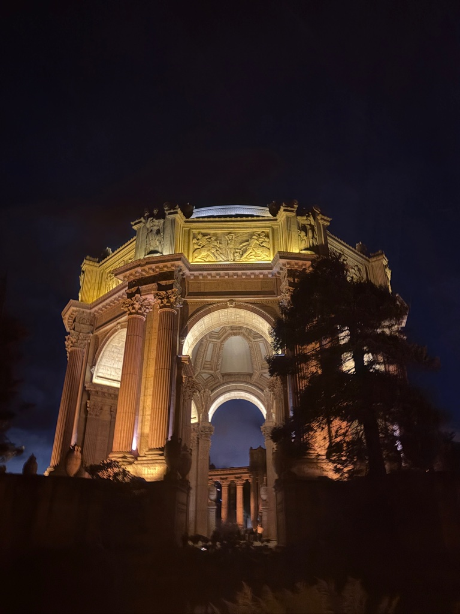
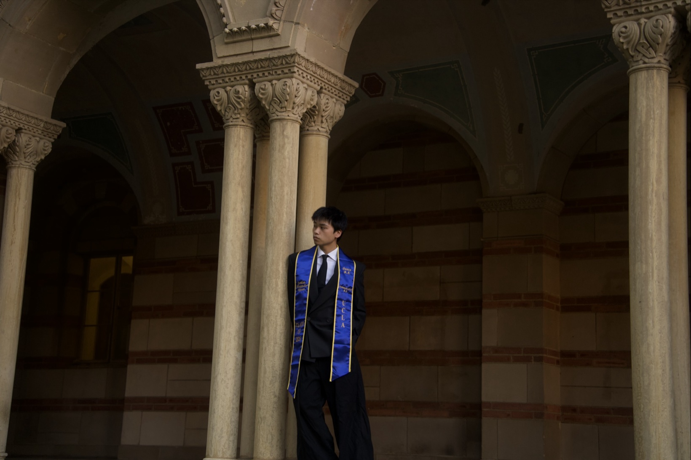
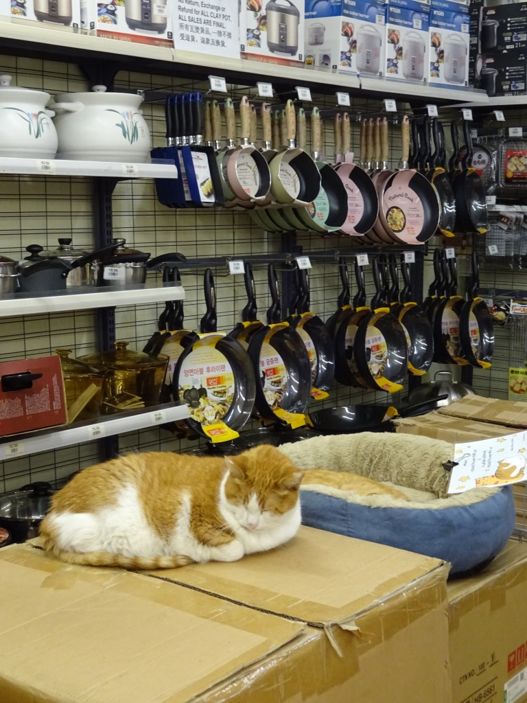
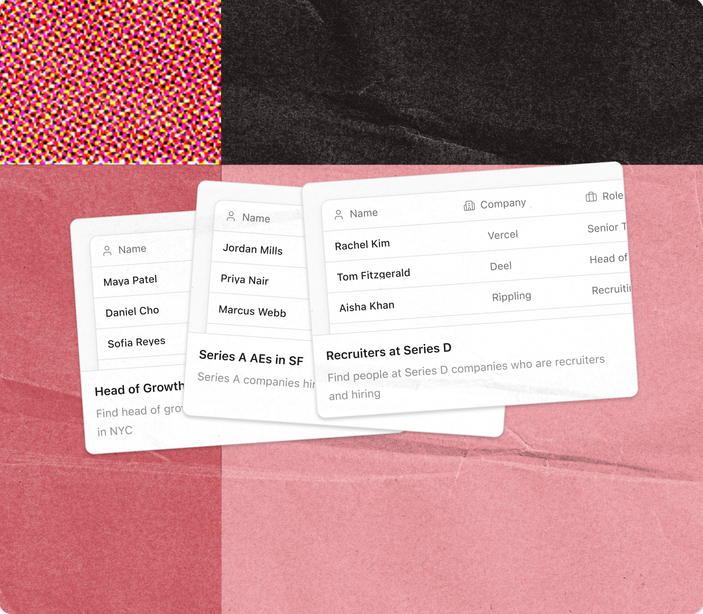
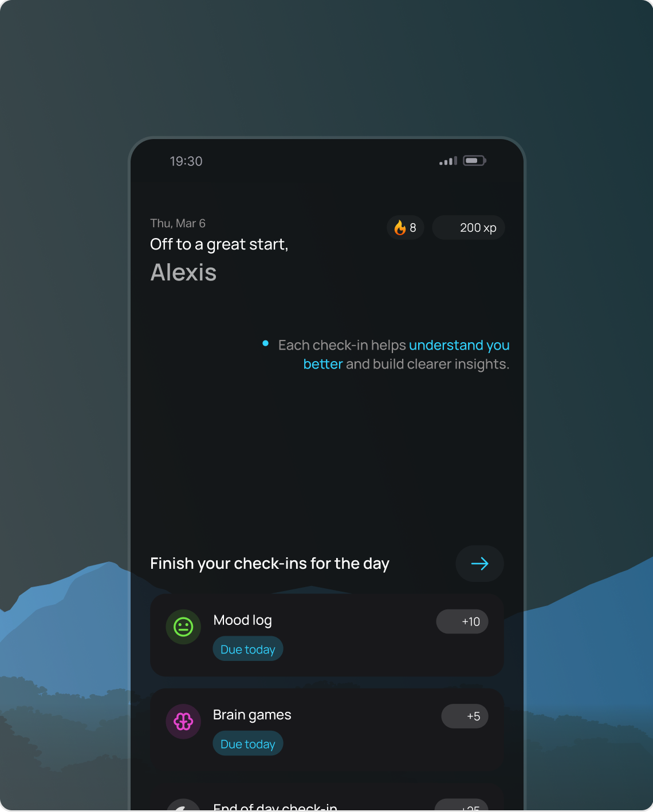
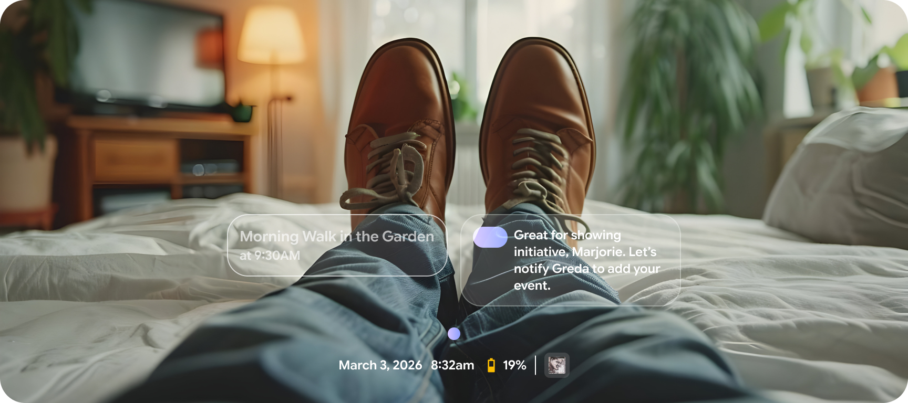

Hey, I’m Jordan!
A designer dabbling here and there...



I design to...
Break the silence and create unforgettable moments.
Work



A designer dabbling here and there...



I design to...
Break the silence and create unforgettable moments.


